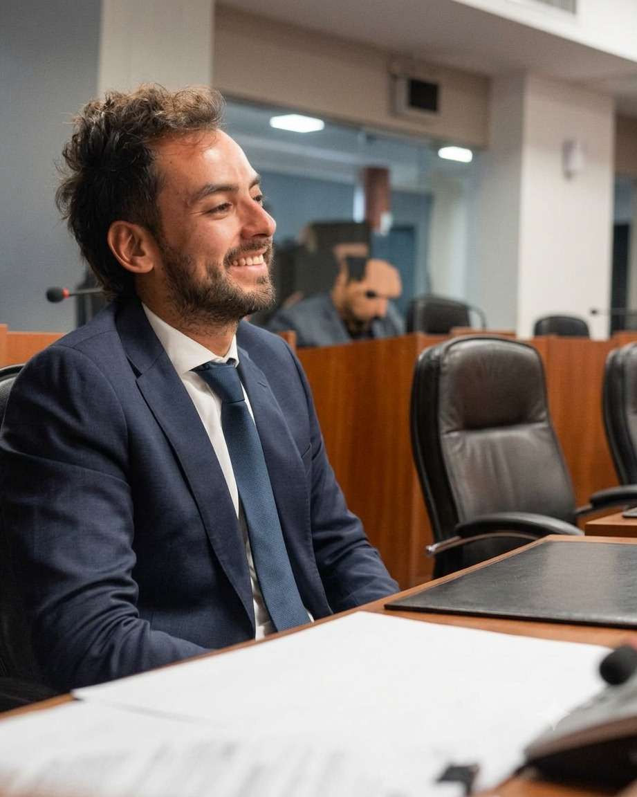
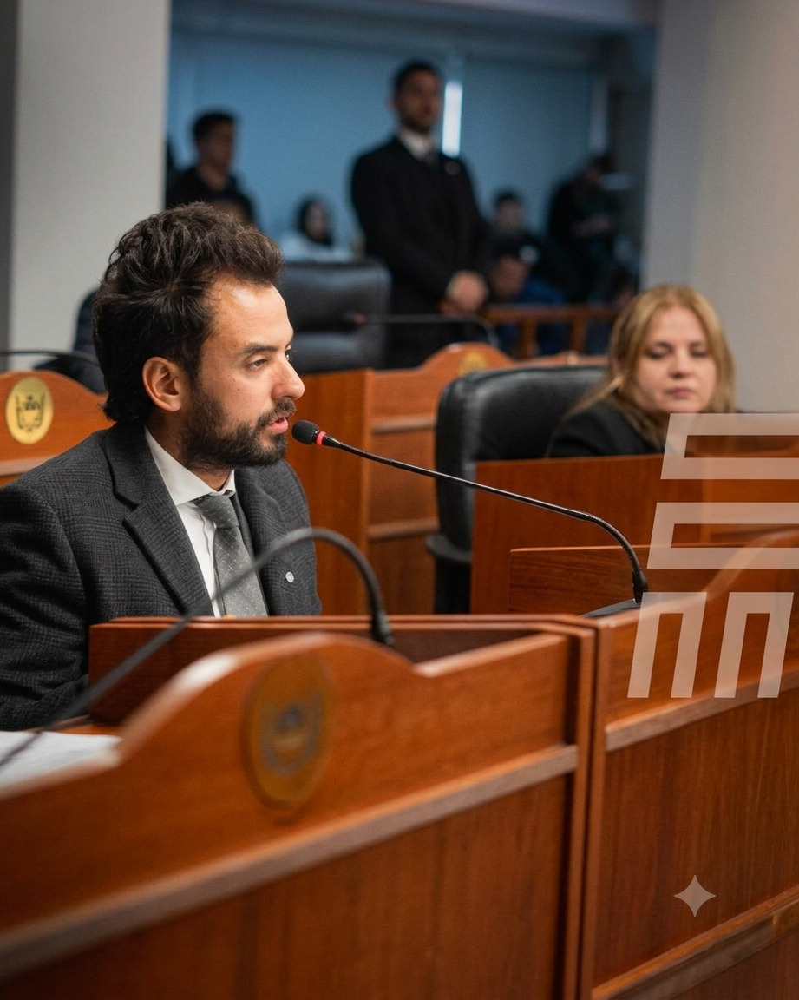
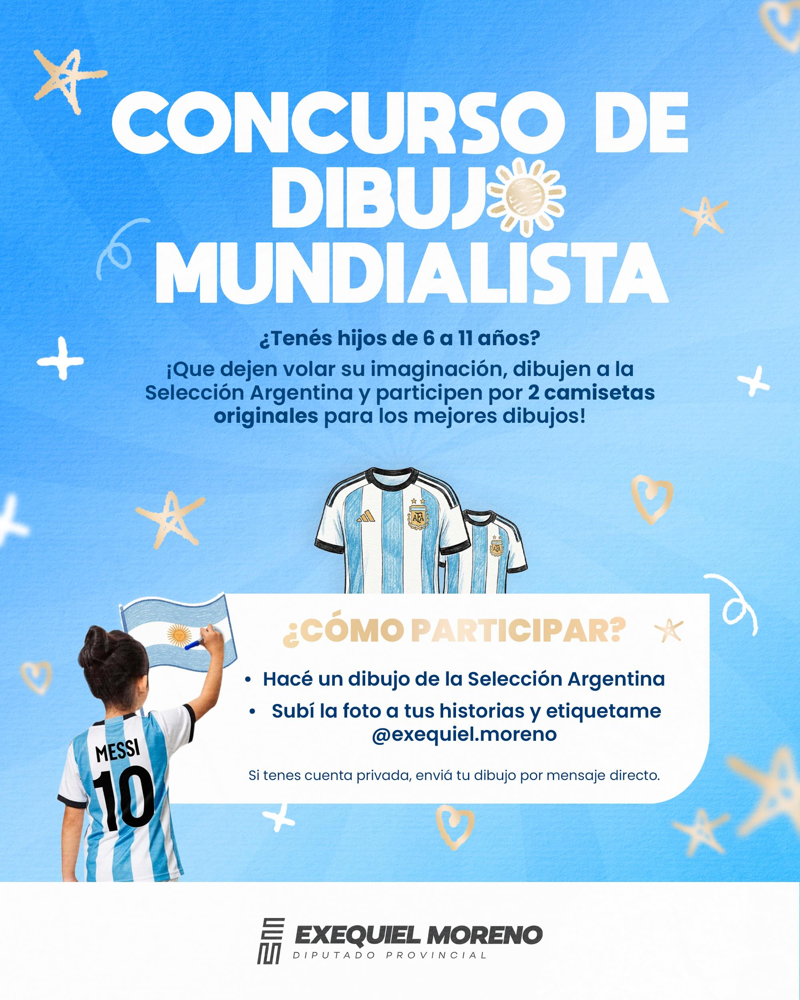
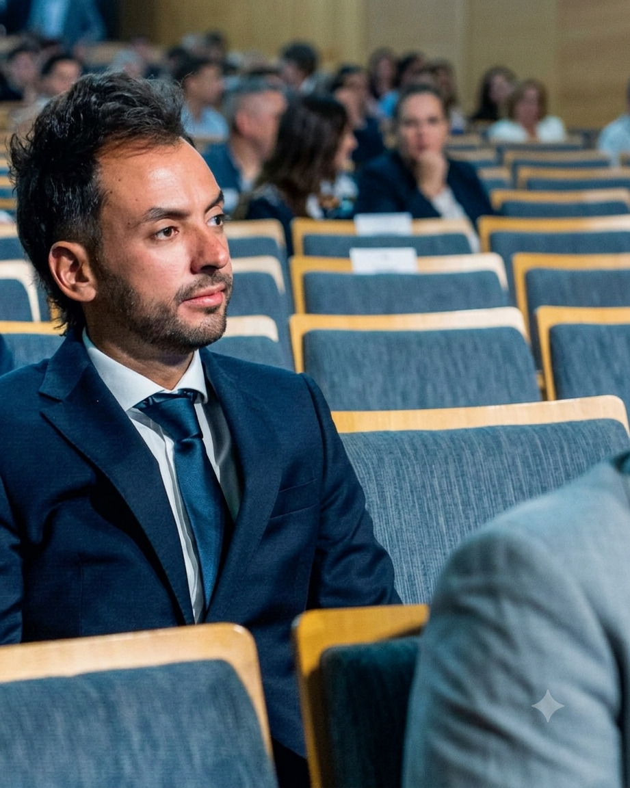

En los Medios
Entrevistas, notas periodísticas y apariciones audiovisuales de Exequiel Moreno.

"Catamarca necesita legisladores que estén en el territorio, no solo en los salones"
Entrevista en profundidad con Exequiel Moreno sobre sus proyectos legislativos, su metodología de trabajo territorial y la visión para el desarrollo provincial.
Leer nota completa arrow_forwardVideos y entrevistas
5° Sesión Ordinaria de la Cámara de Diputados de Catamarca
Transmisión en vivo de la quinta sesión ordinaria donde se debatieron proyectos clave para el desarrollo provincial, incluyendo iniciativas del Dip. Moreno.

Entrevista en Radio Valle Viejo: agenda legislativa junio
Análisis de los proyectos en tratamiento y perspectivas para el segundo semestre legislativo.

Entrevista en Canal 2 Catamarca sobre el Concurso Mundialista
El Diputado explicó los detalles de la iniciativa que convoca a niños de toda la provincia.

Conferencia de prensa: Registro de Condenados por Delitos Sexuales
Presentación del proyecto ante los medios de comunicación de la capital provincial.
Notas periodísticas

El Diputado Moreno impulsa concurso de dibujo para conectar niños con la Selección Argentina
La iniciativa convoca a chicos de entre 6 y 11 años para que expresen su pasión por el fútbol...
Proyecto legislativo busca crear Registro Público de Condenados por delitos sexuales en Catamarca
El Diputado Provincial Exequiel Moreno presentó un proyecto de ley que apunta a fortalecer las políticas de prevención y protección...
La Cámara de Diputados provincial avanzó en el tratamiento de la nueva agenda legislativa
En la quinta sesión ordinaria del año, los diputados debatieron diversas iniciativas orientadas al desarrollo social e institucional...

Kit de Prensa
¿Sos periodista y necesitás material gráfico, información o una entrevista? Contactanos directamente.
Respondemos consultas de prensa en horarios hábiles. También podés solicitar declaraciones y pronunciamientos legislativos.